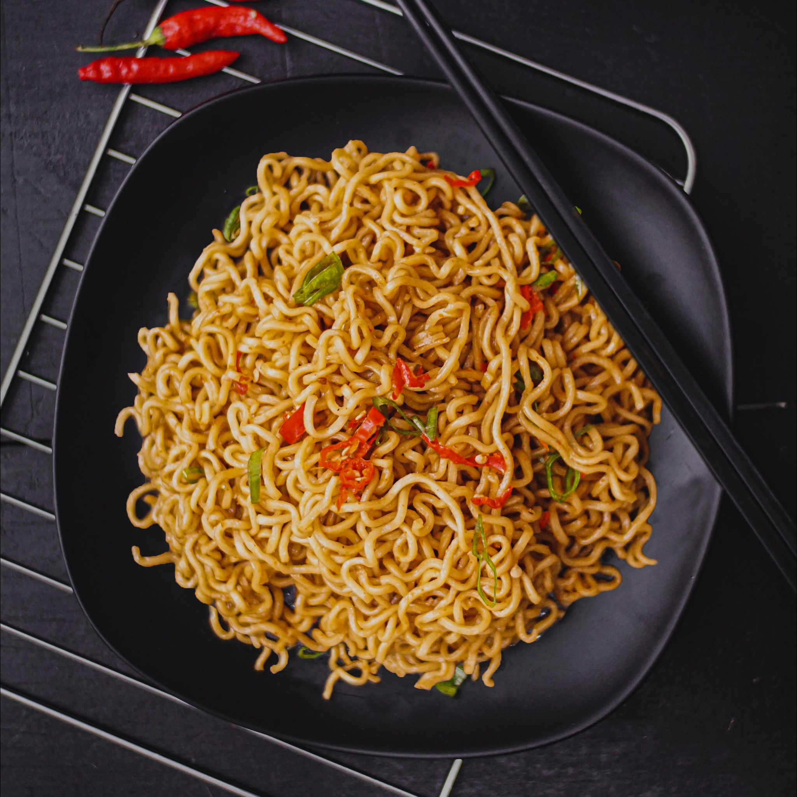

Noodles

Recipe
Ingredients
- 1½ cups (350 ml) of water
- 70g packets of Maggi noodles
- Salt and ground pepper to taste
Method
- Take one and a half cup of water in a pan.
- Heat the pan on medium flame.
- When the water comes to boil, add the Noodles Cake to the pan.
- Cover it with a lid for a minute.
- After a minute, uncover the lid and add the tastemaker to the pan.
- Mix it well.
- Without breaking the Noodles.
- Switch off the flame when all the Water boils.
- Enjoy the hot Maggi in this lovely weather!